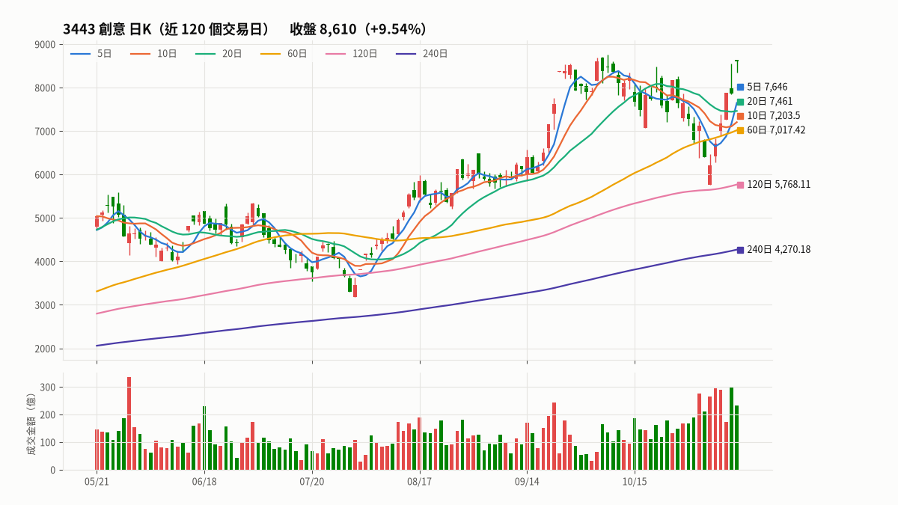
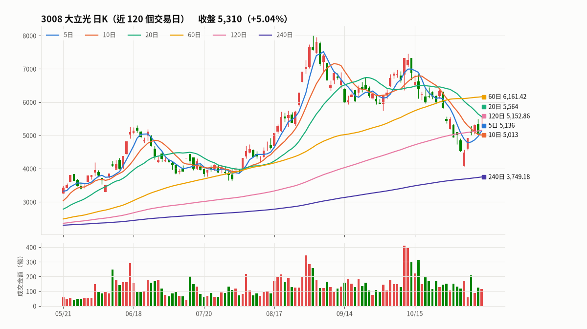
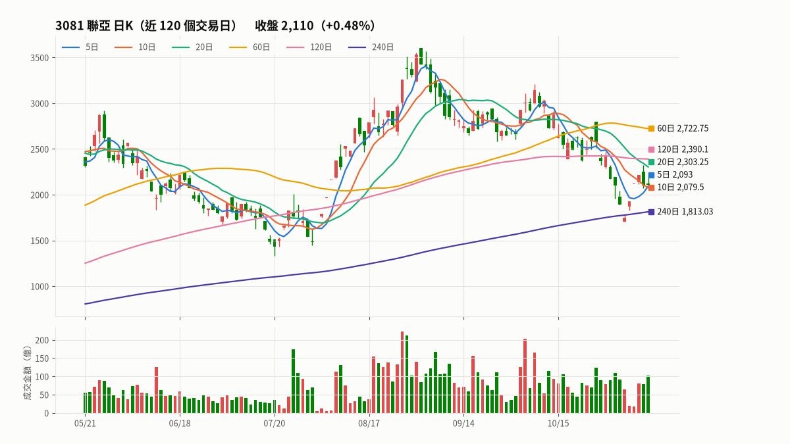
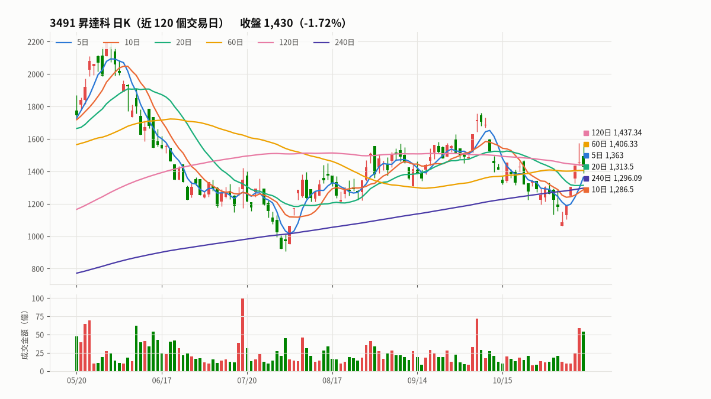

👀 個股追蹤 2026-11-13（五）
💤 今天（11/14）休市，以下是最近一個交易日的資料
| 代號 | 名稱 | 收盤 | 漲跌 | 量（倍） | 近20日 | 均線位置 | 支撐壓力 | 法人（張） | 符合 |
|---|---|---|---|---|---|---|---|---|---|
| 2330 | 台積電 | 2,350 | +0.43% | 0.8 | -5.6% | 在 5、10、20、240 日線之上，60、120 日線之下 | 到關鍵支撐：收盤在 20日線（月線） 2,348.25 上方 0.07%（接近支撐） | +744 | — |
| 0050 | 元大台灣50 | 102.5 | +1.54% | 0.5 | -9.3% | 在 5、10、240 日線之上，20、60、120 日線之下 | 還沒到支撐：最近的支撐是 5日線（週線） 100.76（距離 1.7%） | +37,030 | — |
| 2454 | 聯發科 | 4,120 | +7.01% | 1.3 | -7.9% | 在 5、10、20、240 日線之上，60、120 日線之下 | 站上 20日線（月線） 3,940（由壓力轉為支撐） | +2,610 | — |
| 3443 | 創意 | 8,610 | +9.54% | 1.1 | +4.4% | 站在所有均線之上 | 還沒到支撐：最近的支撐是 5日線（週線） 7,646（距離 12.6%） | +150 | 接近60日新高、快創60日新高 |
| 3008 | 大立光 | 5,310 | +5.04% | 0.7 | -22.8% | 在 5、10、120、240 日線之上，20、60 日線之下 | 站上 120日線（半年線） 5,152.86（由壓力轉為支撐） | +44 | — |
| 3081 | 聯亞 | 2,110 | +0.48% | 1.5 | -26.7% | 在 5、10、240 日線之上，20、60、120 日線之下 | 到關鍵支撐：盤中回測 5日線（週線） 2,093，收盤守住 | -608 | 外資連續賣超 |
| 3491 | 昇達科 | 1,430 | -1.72% | 2.8 | +1.4% | 在 5、10、20、60、240 日線之上，120 日線之下 | 跌破 120日線（半年線） 1,437.34，下一個支撐是 60日線（季線） 1,406.33（距離 1.7%） | -401 | 接近季線 |
2330 台積電 2,350 ▲10（+0.43%）

日K：長黑K、開高走低（開 2,375｜高 2,390｜低 2,340｜收 2,350）
量能：成交 30,973 張（733.3 億），是 20 日均量的 0.8 倍（量平）
漲跌：近5日 +10.1%｜近20日 -5.6%｜近60日 -1.6%｜距 60 日高點 -9.1%
法人：外資 -2,618｜投信 +2,946｜自營商 +416｜合計 +744 張（外資連賣 2 天、法人 5 日 -4,038 張）（11/13）
融資融券：融資 32,376（+120，使用率 0.5%）｜融券 50（-24）｜券資比 0.2%（11/13）
大戶：400 張以上大股東 87.0%，週增減 -0.04（11/13）
📅 11/16（一） 法說會（09:00）
均線：在 5、10、20、240 日線之上，60、120 日線之下｜均線交錯
- 站上 20日線（月線） 2,348.25（由壓力轉為支撐）
- 到關鍵支撐：收盤在 20日線（月線） 2,348.25 上方 0.07%（接近支撐）
- 反彈到 120日線（半年線） 2,387.53 遇壓（盤中碰到、收盤在均線下方）
- 上方壓力：120日線（半年線） 2,387.53（距離 1.6%）
| 均線 | 數值 | 收盤距離 | 方向 | 今天 |
|---|---|---|---|---|
| 5日線（週線） | 2,321 | +1.25% | ↗ 上揚 | 在上方（支撐） |
| 10日線（雙週線） | 2,286.5 | +2.78% | ↘ 下彎 | 在上方（支撐） |
| 20日線（月線） | 2,348.25 | +0.07% | ↘ 下彎 | 站上（支撐） |
| 60日線（季線） | 2,412.57 | -2.59% | ↘ 下彎 | 在下方（壓力） |
| 120日線（半年線） | 2,387.53 | -1.57% | ↗ 上揚 | 反彈遇壓（壓力） |
| 240日線（年線） | 2,087.52 | +12.57% | ↗ 上揚 | 在上方（支撐） |
0050 元大台灣50 102.5 ▲1.55（+1.54%）

日K：小黑K、開高走低、長上影線（上檔有賣壓）（開 102.85｜高 104.4｜低 102.1｜收 102.5）
量能：成交 128,607 張（133.1 億），是 20 日均量的 0.5 倍（量縮）
漲跌：近5日 +10.8%｜近20日 -9.3%｜近60日 -3.7%｜距 60 日高點 -12.0%
法人：外資 +14,476｜投信 +5,585｜自營商 +16,969｜合計 +37,030 張（外資連買 1 天、法人 5 日 -17,354 張）（11/13）
融資融券：融資 37,150（-1,050，使用率 0.6%）｜融券 481（-20）｜券資比 1.3%（11/13）
大戶：400 張以上大股東 24.0%，週增減 +0.98（11/13）
均線：在 5、10、240 日線之上，20、60、120 日線之下｜均線交錯
- 還沒到支撐：最近的支撐是 5日線（週線） 100.76（距離 1.7%）
- 反彈到 20日線（月線） 103.69 遇壓（盤中碰到、收盤在均線下方）
- 上方壓力：20日線（月線） 103.69（距離 1.1%）
| 均線 | 數值 | 收盤距離 | 方向 | 今天 |
|---|---|---|---|---|
| 5日線（週線） | 100.76 | +1.73% | ↗ 上揚 | 在上方（支撐） |
| 10日線（雙週線） | 99.8 | +2.71% | ↘ 下彎 | 在上方（支撐） |
| 20日線（月線） | 103.69 | -1.15% | ↘ 下彎 | 反彈遇壓（壓力） |
| 60日線（季線） | 107.4 | -4.56% | ↘ 下彎 | 在下方（壓力） |
| 120日線（半年線） | 105.39 | -2.75% | ↗ 上揚 | 在下方（壓力） |
| 240日線（年線） | 89.8 | +14.15% | ↗ 上揚 | 在上方（支撐） |
2454 聯發科 4,120 ▲270（+7.01%）

日K：長黑K、開高走低（開 4,235｜高 4,235｜低 4,060｜收 4,120）
量能：成交 15,475 張（648.8 億），是 20 日均量的 1.3 倍（量平）
漲跌：近5日 +21.5%｜近20日 -7.9%｜近60日 -2.1%｜距 60 日高點 -22.0%
法人：外資 +2,170｜投信 +305｜自營商 +136｜合計 +2,610 張（外資連買 2 天、法人 5 日 +1,909 張）（11/13）
融資融券：融資 11,713（+160，使用率 2.9%）｜融券 61（+15）｜券資比 0.5%（11/13）
大戶：400 張以上大股東 71.3%，週增減 -0.21（11/13）
均線：在 5、10、20、240 日線之上，60、120 日線之下｜均線交錯
- 站上 20日線（月線） 3,940（由壓力轉為支撐）
- 還沒到支撐：最近的支撐是 20日線（月線） 3,940（距離 4.6%）
- 反彈到 120日線（半年線） 4,170.04 遇壓（盤中碰到、收盤在均線下方）
- 上方壓力：120日線（半年線） 4,170.04（距離 1.2%）
| 均線 | 數值 | 收盤距離 | 方向 | 今天 |
|---|---|---|---|---|
| 5日線（週線） | 3,903 | +5.56% | ↗ 上揚 | 在上方（支撐） |
| 10日線（雙週線） | 3,772.5 | +9.21% | ↗ 上揚 | 在上方（支撐） |
| 20日線（月線） | 3,940 | +4.57% | ↘ 下彎 | 站上（支撐） |
| 60日線（季線） | 4,307 | -4.34% | ↘ 下彎 | 在下方（壓力） |
| 120日線（半年線） | 4,170.04 | -1.20% | ↗ 上揚 | 反彈遇壓（壓力） |
| 240日線（年線） | 2,985.53 | +38.00% | ↗ 上揚 | 在上方（支撐） |
3443 創意 8,610 ▲750（+9.54%）

日K：小黑K、開高走低、長下影線（下檔有買盤）（開 8,645｜高 8,645｜低 8,350｜收 8,610）
量能：成交 2,699 張（232.8 億），是 20 日均量的 1.1 倍（量平）
漲跌：近5日 +38.8%｜近20日 +4.4%｜近60日 +57.5%｜創 60 日新高
法人：外資 +75｜投信 +57｜自營商 +18｜合計 +150 張（外資連買 2 天、法人 5 日 +398 張）（11/13）
融資融券：融資 3,893（+50，使用率 11.6%）｜融券 200（+23）｜券資比 5.1%（11/13）
大戶：400 張以上大股東 64.8%，週增減 +0.10（11/13）
族群：IP
符合：接近60日新高、快創60日新高
均線：站在所有均線之上｜均線交錯
- 還沒到支撐：最近的支撐是 5日線（週線） 7,646（距離 12.6%）
- 上方沒有均線壓力（在所有均線之上）
| 均線 | 數值 | 收盤距離 | 方向 | 今天 |
|---|---|---|---|---|
| 5日線（週線） | 7,646 | +12.61% | ↗ 上揚 | 在上方（支撐） |
| 10日線（雙週線） | 7,203.5 | +19.53% | ↗ 上揚 | 在上方（支撐） |
| 20日線（月線） | 7,461 | +15.40% | ↗ 上揚 | 在上方（支撐） |
| 60日線（季線） | 7,017.42 | +22.69% | ↗ 上揚 | 在上方（支撐） |
| 120日線（半年線） | 5,768.11 | +49.27% | ↗ 上揚 | 在上方（支撐） |
| 240日線（年線） | 4,270.18 | +101.63% | ↗ 上揚 | 在上方（支撐） |
3008 大立光 5,310 ▲255（+5.04%）

日K：十字線（多空拉鋸）、長上影線（上檔有賣壓）（開 5,305｜高 5,560｜低 5,250｜收 5,310）
量能：成交 2,098 張（114.8 億），是 20 日均量的 0.7 倍（量平）
漲跌：近5日 +18.5%｜近20日 -22.8%｜近60日 +15.2%｜距 60 日高點 -32.0%
法人：外資 +19｜投信 -49｜自營商 +75｜合計 +44 張（外資連買 3 天、法人 5 日 -59 張）（11/13）
融資融券：融資 2,877（-11，使用率 8.8%）｜融券 110（-3）｜券資比 3.8%（11/13）
大戶：400 張以上大股東 53.1%，週增減 -0.60（11/13）
族群：光通
均線：在 5、10、120、240 日線之上，20、60 日線之下｜均線交錯
- 站上 120日線（半年線） 5,152.86（由壓力轉為支撐）
- 還沒到支撐：最近的支撐是 120日線（半年線） 5,152.86（距離 3.0%）
- 上方壓力：20日線（月線） 5,564（距離 4.6%）
| 均線 | 數值 | 收盤距離 | 方向 | 今天 |
|---|---|---|---|---|
| 5日線（週線） | 5,136 | +3.39% | ↗ 上揚 | 在上方（支撐） |
| 10日線（雙週線） | 5,013 | +5.92% | ↘ 下彎 | 在上方（支撐） |
| 20日線（月線） | 5,564 | -4.57% | ↘ 下彎 | 在下方（壓力） |
| 60日線（季線） | 6,161.42 | -13.82% | ↗ 上揚 | 在下方（壓力） |
| 120日線（半年線） | 5,152.86 | +3.05% | ↗ 上揚 | 站上（支撐） |
| 240日線（年線） | 3,749.18 | +41.63% | ↗ 上揚 | 在上方（支撐） |
3081 聯亞 2,110 ▲10（+0.48%）

日K：十字線（多空拉鋸）、開高走低、長上影線（上檔有賣壓）（開 2,125｜高 2,220｜低 2,065｜收 2,110）
量能：成交 4,820 張（103.0 億），是 20 日均量的 1.5 倍（量平）
漲跌：近5日 +20.6%｜近20日 -26.7%｜近60日 -16.9%｜距 60 日高點 -40.2%
法人：外資 -590｜投信 -3｜自營商 -15｜合計 -608 張（外資連賣 5 天、法人 5 日 -1,555 張）（11/13）
融資融券：融資 5,100（+153，使用率 20.0%）｜融券 159（-10）｜券資比 3.1%（11/13）
大戶：400 張以上大股東 43.6%，週增減 -0.04（11/13）
族群：光通
符合：外資連續賣超
📅 今天 法說會（09:00）
均線：在 5、10、240 日線之上，20、60、120 日線之下｜均線交錯
- 站上 10日線（雙週線） 2,079.5（由壓力轉為支撐）
- 到關鍵支撐：盤中回測 5日線（週線） 2,093，收盤守住
- 上方壓力：20日線（月線） 2,303.25（距離 8.4%）
| 均線 | 數值 | 收盤距離 | 方向 | 今天 |
|---|---|---|---|---|
| 5日線（週線） | 2,093 | +0.81% | ↗ 上揚 | 回測有撐（支撐） |
| 10日線（雙週線） | 2,079.5 | +1.47% | ↘ 下彎 | 站上（支撐） |
| 20日線（月線） | 2,303.25 | -8.39% | ↘ 下彎 | 在下方（壓力） |
| 60日線（季線） | 2,722.75 | -22.50% | ↘ 下彎 | 在下方（壓力） |
| 120日線（半年線） | 2,390.1 | -11.72% | ↘ 下彎 | 在下方（壓力） |
| 240日線（年線） | 1,813.03 | +16.38% | ↗ 上揚 | 在上方（支撐） |
3491 昇達科 1,430 ▼25（-1.72%）

日K：長黑K、開高走低（開 1,495｜高 1,570｜低 1,390｜收 1,430）
量能：成交 3,601 張（53.9 億），是 20 日均量的 2.8 倍（量增）
漲跌：近5日 +31.8%｜近20日 +1.4%｜近60日 +4.0%｜距 60 日高點 -16.6%
法人：外資 -403｜投信 -11｜自營商 +13｜合計 -401 張（外資連賣 1 天、法人 5 日 +795 張）（11/13）
融資融券：融資 3,032（+187，使用率 17.6%）｜融券 27（-2）｜券資比 0.9%（11/13）
大戶：400 張以上大股東 37.7%，週增減 +1.10（11/13）
族群：網通
符合：接近季線
均線：在 5、10、20、60、240 日線之上，120 日線之下｜均線交錯
- 跌破 120日線（半年線） 1,437.34，下一個支撐是 60日線（季線） 1,406.33（距離 1.7%）
- 到關鍵支撐：盤中回測 60日線（季線） 1,406.33，收盤守住
- 上方壓力：120日線（半年線） 1,437.34（距離 0.5%）
| 均線 | 數值 | 收盤距離 | 方向 | 今天 |
|---|---|---|---|---|
| 5日線（週線） | 1,363 | +4.92% | ↗ 上揚 | 在上方（支撐） |
| 10日線（雙週線） | 1,286.5 | +11.15% | ↗ 上揚 | 在上方（支撐） |
| 20日線（月線） | 1,313.5 | +8.87% | ↗ 上揚 | 在上方（支撐） |
| 60日線（季線） | 1,406.33 | +1.68% | ↗ 上揚 | 回測有撐（支撐） |
| 120日線（半年線） | 1,437.34 | -0.51% | ↘ 下彎 | 跌破（壓力） |
| 240日線（年線） | 1,296.09 | +10.33% | ↗ 上揚 | 在上方（支撐） |
🔍 型態掃描
W底(範例)（40 天）
目前沒有相似度 ≥85% 的股票
歷史相似型態 10 次，樣本少：5天 平均+3.8%／上漲80%、10天 平均+12.9%／上漲80%、20天 平均+8.0%／上漲50%｜全市場同期 20天 平均+4.9%／上漲54%
說明
- 均線、支撐壓力的判斷和盤勢解析相同（config「盤勢解析」的均線與門檻）；均線和漲跌用還原股價，收盤價是實際價格。
- 量能：今天成交量和前 20 日均量比較，1.5 倍以上是量增、0.7 倍以下是量縮。
- 融資融券每天晚上 9:30 才公布，傍晚的報告是前一個交易日的；大戶是集保每週五更新的 400 張以上大股東比例。
- 「符合」是 config「選股」裡今天成立的條件組（含 K 線型態）。
※ 依固定規則整理的盤後資料，僅供參考，不構成投資建議